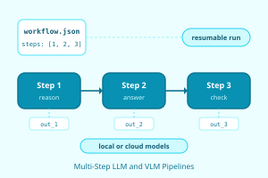
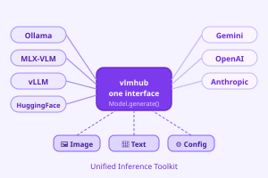
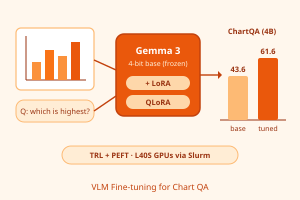
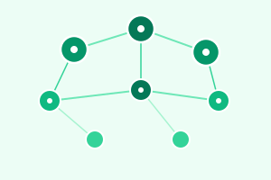
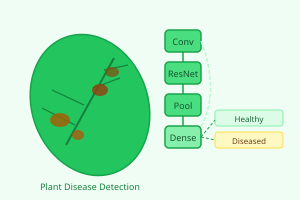
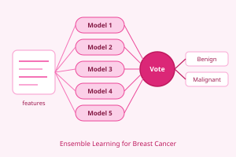
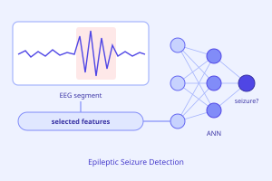

I am a machine learning researcher and Ph.D. candidate in Computer Science at the University of Houston (expected December 2026), advised by Prof. Shishir Shah (now at the University of Oklahoma) and Prof. Jaspal Subhlok. I specialize in multimodal AI: vision-language models, LLM evaluation, and computer vision.
On the NSF-funded VideoPoints platform, I deployed a summarization system that condenses hour-long lectures into 5-minute summaries with supporting visuals, used by 750+ students in 10+ courses. My work also covers object detection in lecture videos, including the LVVO dataset, and fine-tuning VLMs with QLoRA. I have published 5 peer-reviewed IEEE papers.
Previously, I was an Assistant Professor / Lecturer at Khulna University of Engineering & Technology (KUET), Bangladesh, and a Software Engineer at Samsung R&D Institute Bangladesh. I hold an M.Sc. in Computer Science from the University of Houston (May 2026, awarded en route to the Ph.D.) and a B.Sc. in Electronics and Communication Engineering from KUET, where I was University Gold Medalist.
I am graduating in December 2026 and seeking full-time Applied Scientist, Research Scientist, and ML Engineer roles in multimodal AI, vision-language models, and computer vision.

Built configurable prompt chaining for multi-step workflows on local or cloud models, with resumable experiments. Made the workflow engine reusable across datasets, saving every step's output for review.

Built one interface for multimodal prompts on 8+ backends, from cloud APIs to vLLM, Ollama, and Hugging Face Transformers. Pre-configured 10+ open LLMs and VLMs, including Gemma 3, Qwen3-VL, and InternVL, each callable by name.

Fine-tuned Gemma 3 with QLoRA, raising ChartQA accuracy from 43.6% to 61.6% (4B) and 61.8% to 69.4% (12B). Trained on 28k chart questions using Hugging Face TRL and PEFT on single and multiple L40S GPUs via Slurm.
Deployed automatic chaptering that splits each newly uploaded lecture into titled chapters; in daily use since Aug 2025. Aligned Whisper transcripts with slide transitions and used Gemini structured output, auto-correcting gaps and overlaps.
Designed a PyTorch codebase for reproducible training and fine-tuning of YOLO, Faster R-CNN, and DETR, with Hydra configs and unified train, evaluate, and predict steps.
In a team project, trained and evaluated an IoU-aware RetinaFace with ResNet50 and MobileNet0.25 backbones on 4 V100 GPUs, raising AP on the medium and hard WIDER FACE sets.
This paper investigates how modern object detectors can be adapted to lecture videos, where visual content is often semantically complex and weakly structured. It shows that YOLO-based transfer learning, combined with semi-supervised dataset enrichment, raises AP50 from 90.8% to 95.3%.
This work presents LVVO, a dataset for visual object detection in educational videos, with 4,000 frames from 245 lecture videos. Its labels come from a multi-annotator protocol with expert conflict resolution, and it supports both supervised and semi-supervised research.

This paper presents LogiForm, a graph-based approach for identifying meaningful visual objects in lecture video frames, where slide visuals are often diverse, custom-designed, and composed of parts without clear boundaries. By merging fragmented detections using spatial, color, and local geometric cues, it improves mAP by 15.8%.

Develops a ResNet50 transfer-learning model for 38-class plant disease detection on PlantVillage, reaching 99.80% accuracy.

Builds a five-classifier voting ensemble for breast cancer prediction, reaching 99.28% accuracy.

Detects epileptic seizures with an artificial neural network (ANN) using selected features of different complexities.